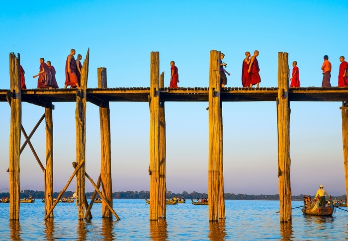

El nombre oficial del estado es "República de la Unión de Myanmar" (ပြည်ထောင်စုသမ္မတ မြန်မာနိုင်ငံတော်, Pyidaunzu Thanmăda Myăma Nainngandaw). En los idiomas occidentales se lo conoce como Birmania, ambos nombres derivados de un mismo origen; el grupo étnico de los bamar, siendo Myanmar la forma literaria de Birmania.
Birmania o Myanmar, oficialmente República de la Unión de Myanmar, es un Estado soberano del Sudeste Asiático. Limita con India y Bangladés al oeste, Tailandia y Laos al este, China al norte y noreste, y con la bahía de Bengala y el mar de Andamán al sur. Tiene una superficie de 676 578 km² y una población en 2017 de unos 54 millones de habitantes. Su capital desde el año 2005 es Naipyidó y su ciudad más poblada y anterior capital, Rangún.
Mapa de la localización de Birmania
El país es rico en jade, gemas, petróleo, gas natural y otros recursos minerales
En 2013, su PIB (nominal) se situó en US $ 56.7 mil millones y su PBI (PPA) en US $ 221.5 mil millones. La brecha de ingresos en Birmania se encuentra entre las más amplias del mundo, ya que una gran proporción de la economía está controlada por partidarios del anterior gobierno militar. A partir de 2016, Birmania clasifica 145 de 188 países en desarrollo humano, de acuerdo con el Índice de Desarrollo Humano.12
Jade
El jade es una roca ornamental. El término jade es aplicado a dos rocas metamórficas distintas compuestas de diferentes minerales silicatados:
La nefrita consiste en un agregado de fibras entrelazadas microcristalinas de calcio, mineral anfíbol rico en magnesio-hierro de la serie de la tremolita (calcio-magnesio)-ferroactinolita (calcio-magnesio-hierro).
El miembro medio de esta serie con una composición intermedia es llamado actinolita (la forma mineral fibrosa sedosa es una de las formas del asbesto). Y el miembro superior el más verdoso por el hierro.
La jadeíta es un piroxeno rico en aluminio y sodio. El mineral utilizado como gema es la forma microcristalina de la matriz de cristales entrelazados.
Máscara en jade del rey Pakal, gobernante de Palenque. Museo Nacional de Antropología e Historia, México.
Gemas
Una gema, también llamada piedra preciosa, es una roca o mineral que al ser cortado y pulido se puede usar en la confección de joyas u objetos artísticos. Otras son creadas artificialmente con resina y pigmentos, o bien son de origen vegetal, como el ámbar, o animal, como la perla (producida por una ostra) y el coral (formado por pequeños pólipos acuáticos).
Gemas: turquesa, hematita, crisocola y ojo de tigre (primera fila), cuarzo, turmalina, cornalina, pirita y sugilita (segunda fila), malaquita, cuarzo rosado, obsidiana, rubí y ágata (tercera fila), jaspe, amatista, ágata azul y lapislázuli (cuarta fila).
Geografía
Birmania, que se extiende desde los confines himalayos al norte hasta la península de Malaca al sur, se abre al oeste sobre el golfo de Bengala, cuyo litoral está dominado por la cercana cordillera de Arakan. El relieve montañoso culmina en su extremo norte, con la altura máxima en el pico Hkakabo Razi (5967 m), en los montes Gaoligong. Hay muchos volcanes apagados. Las cordilleras, dispuestas de norte a sur, aíslan las llanuras regadas por los ríos Chindwin, Ayeyarwady (Irrawady), Sittang y Saluén. Otro río importante que pasa por este país el Mekong.
El clima es variable, con predominio tropical caluroso, de un promedio térmico de 25 °C. Gran parte del país se encuentra entre el trópico de Cáncer y el Ecuador. El país se encuentra en la región de los monzones de Asia, con sus regiones costeras que recibe anualmente de la lluvia más de 5000 mm (196,9 pulgadas). La precipitación anual en la región del delta es de aproximadamente 2500 mm (98,4 pulgadas), mientras que precipitación media anual en la zona seca, que se encuentra en el centro de Birmania, es inferior a 1000 mm (39,4 pulgadas). Regiones del norte del país son las más frías, con temperaturas medias de 21 ° C (70 ° F). Costa y en las regiones del delta tienen una temperatura máxima promedio de 32 ° C (89.6 ° F).75

Uno de los rincones imprescindibles de Birmania es el Lago Inle. Una vez allí, hay que subir a una barca (protegido con un paraguas y visitar la pagoda de Phaung Daw Oo, el pueblo de Inthein, al que se llega a través de un estrecho canal en el que los críos juegan, saltan y se lavan con champú, y el monasterio de los gatos saltarines. Se llama así porque era el espéctaculo que, antes, ofrecían dentro. Pero comenzaron a ganar mucho dinero y los monjes de otros templos se quejaron. Así que adiós a los bailes mininos. Lo que sí se mantiene es el Festival de los Elefantes Saltarines en octubre.
Lenguas de Birmania
Birmania es un país bastante diverso desde el punto de vista etnolingüístico. En su territorio confluyen tres grandes familias lingüísticas de Asia: la familia tibeto-birmana, la familia austroasiática y la familia tai-kadai.83 El principal idioma del país, el idioma birmano, es una lengua tibeto-birmana del grupo lolo-búrmico.84
Lenguas tibetano-birmanas
Constituyen una familia de lenguas que incluye varios centenares de lenguas, habladas en una región comprendida entre la meseta tibetana (al N.), hasta la península malaya (al S.) y desde Pakistán (al W.) hasta Vietnam (al E.).
Lenguas tibetano-birmanas
Distribución geográfica
Himalaya y Extremo Oriente
Países
Pakistán
India
Nepal
Bután
Birmania
China
Vietnam
Filiación genética
Sino-tibetano
Subdivisiones
Tibetano-himalayo
Kamarupa-kachin
Lolo-birmano
Lenguas austroasiáticas
Las lenguas austroasiáticas son una amplia familia de lenguas del sudeste asiático y la India. El nombre proviene de la palabra griega que significa 'Sur de Asia'.
Lenguas austroasiáticas
Distribución geográfica
Subcontinente Indio y Sudeste Asiático
Países
Birmania
Camboya
India
Laos
Malasia
Tailandia
Vietnam
Filiación genética
Áustrico
Subdivisiones
Munda
Mon-Khmer
Khmúico-Khásico
Lenguas tai-kadai
Las lenguas tai-kadai son una familia de lenguas del sudeste asiático. Antiguamente considerada parte de las lenguas sino-tibetanas, son consideradas hoy en día como familia independiente por la mayor parte de lingüistas. Se ha especulado con su relación con las lenguas austronesias, incluso se ha propuesto su pertenencia al grupo áustrico.
Lenguas tai-kadai
Distribución geográfica
Sudeste asiático
Países
China
Tailandia
Laos
Birmania
Camboya
Vietnam
India
Filiación genética
(agrupadas dentro de las lenguas áustricas)
Subdivisiones
Hlai Kra Kam-Sui Tai
Cultura
La cultura de Birmania es una mezcla centenaria de influencias birmanas, chinas, indias y tailandesas. Esto se refleja en su idioma, en la cocina, y en la música. El arte ha estado influido históricamente por el budismo Theravāda, así como la literatura.
Los alimentos birmanos son una combinación de cocina india, tailandesa, china y étnica. Los birmanos comen tradicionalmente con sus dedos, pero los utensilios y los palillos chinos se han vuelto populares, especialmente en muchas ciudades, y como la mayoría del arroz asiático es el alimento básico.
La mayoría de la población de Myanmar observa el budismo Theravada que llegó al país cuando comenzó la era cristiana. Siendo predominantemente una nación budista, Myanmar es conocida como la Tierra de las Pagodas. Los 4 lugares más importantes de peregrinación budista incluyen Pagoda de Shwedagon (Yangon), Mahamuni Buda (Mandalay), Kyaiktiyo Pagoda (lunes), y Bagan (Ayeyarwaddy River). Otras religiones incluyen el Islam, el hindi, el cristianismo y el animismo.
Saludo tradicional de los birmanos es “mingalaba” que generalmente significa “buen augurio para ti”. Todavía existe la sabiduría aceptada de que la experiencia y el conocimiento vienen con la edad, por lo tanto, los ancianos a los niños se les enseña a respetar a los ancianos.
En el calendario birmano tradicional, hay 12 festivales que coinciden con los 12 meses del año.
Con un océano de velas encendidas los birmanos rinden homenaje a sus antepasados durante el Thadingyut, el festival de las luces en octubre, de tres días de duración, que marca el final del equivalente budista de la Cuaresma.
El arte birmano según los historiadores se basaba en mitos y cosmologías budistas o hindúes.Hay 10 artes tradicionales en Myanmar que incluyen herrero, fundición de bronce, orfebrería, objetos lacados, albañilería, pintura, relieve de estuco, talla de piedra, torno, y la talla en madera. Sin embargo, actualmente, la cultura de Birmania está cada vez más occidentalizada; esto es muy notorio en áreas urbanas. Muchas personas, tanto las mujeres como los hombres, llevan un sarong llamado longyi, más conocido como pa-so en el caso de los hombres.